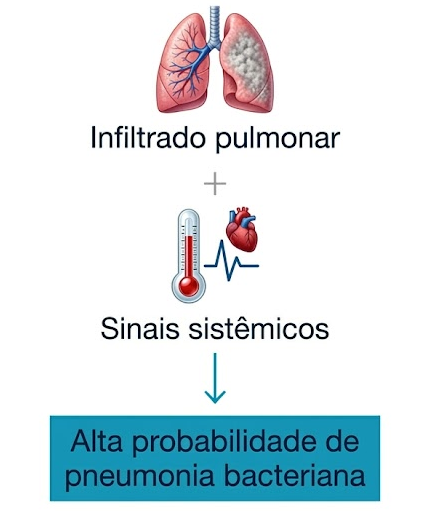

Capítulo 8 — Antibioticoterapia nas Principais Infecções
Infecções respiratórias
Tosse, febre, expectoração e mal-estar podem ocorrer em diferentes
infecções respiratórias e não distinguem, isoladamente, uma causa viral
de uma causa bacteriana. O primeiro passo é avaliar se o conjunto da
história, do exame físico e dos exames disponíveis sustenta pneumonia
ou outro processo bacteriano que possa se beneficiar de
antibioticoterapia 1–3,8.
Um novo infiltrado pulmonar associado a manifestações clínicas
compatíveis sustenta o diagnóstico de pneumonia, mas não identifica
sozinho o agente etiológico. A definição da terapia empírica ainda
depende da gravidade, do local de aquisição, das comorbidades, das
exposições recentes e dos fatores de risco para resistência
1–4.
Compare os cenários
O que muda o raciocínio nas infecções respiratórias?
Analise três apresentações. Em cada uma, identifique a interpretação
mais consistente antes de pensar no espectro antibacteriano.
Cenários analisados
0 de 3
Cenário 1
Sintomas respiratórios recentes
Pessoa adulta apresenta coriza, dor de garganta e tosse há dois
dias. Está hemodinamicamente estável, sem taquipneia, hipoxemia ou
alterações focais na ausculta pulmonar.

O infiltrado deve ser interpretado em conjunto com a
apresentação clínica; isoladamente, não define a etiologia.
Decisão clínica
Qual é a interpretação mais consistente neste momento?
✓
Comparação concluída
Sintoma, diagnóstico e risco microbiológico são decisões
diferentes
Quadro respiratório agudo
Sintomas isolados não confirmam pneumonia bacteriana
Avaliar probabilidade, oferecer cuidado e estabelecer sinais de
reavaliação.
Pneumonia provável
O infiltrado sustenta o diagnóstico, não identifica o agente
Integrar gravidade, local de aquisição e características
individuais.
Maior risco microbiológico
Fatores validados podem modificar a cobertura inicial
Utilizar exposições recentes, resultados anteriores e
epidemiologia local.